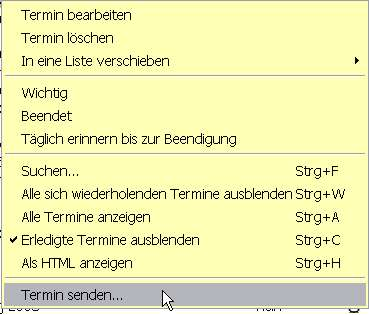
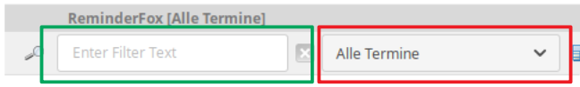
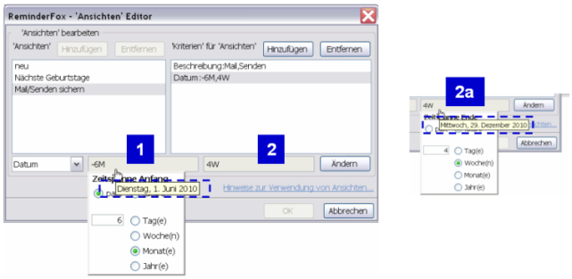

Der ReminderFox Dialog - das Fenster, das beim Öffnen von ReminderFox durch den Benutzer angezeigt wird - ist die Zentrale zum Darstellen und Bearbeiten der Termine bzw. Aufgaben.
Der Aufruf erfolgt durch Klick auf das Schleifen-Symbol oder mittels des Kontextmenüs über dem Schleifen-Symbol.
In der Listenanzeige werden die Termine bzw. Aufgaben dargestellt und bearbeitet, sie hat Tabulatoren für "Termine", "Aufgaben" und selbst hinzugefügte Listen. Das Fenster zeigt alle Ereignisse zusammen mit Attributen in den verschiedenen Spalten.
Die Listenanzeige bietet ebenso Such- und Filterfunktionen für Termine und Aufgaben. Mit der Merkmalen der Termine und Aufgaben (Datum, Kategorie, Notizen usw.) können lassen sich sehr flexibel verschiedene 'Ansichten' der Listen erzeugt werden.
Aus der Listendarstellung heraus ist das Exportieren oder Versenden von Ereignissen /Einladungen möglich.
Spaltenauswahl
Die meisten Spalten sind in der Grundstellung verdeckt. Sie können mit dem Symbol für die Auswahl der Spalten in der rechten oberen Ecke sichtbar gemacht werden. Es erscheint dann dieses Kontextmenü:

- Zeit - zeigt "ganzer Tag" oder zu welcher Zeit das Ereignis stattfindet.
- Datum erledigt - zeigt das Datum, zu dem der Termin abgeschlossen wurde.
- Wiederholung - zeigt in Kurzform, um welche Wiederholungsform es sich handelt (wöchentlich, monatlich, jährlich, etc)
- Erledigt - zeigt ein Symbol, wenn der Termin erledigt wurde. Durch Anklicken dieses Symbols kann der Status des Termins direkt umgeschaltet werden.
- Notiz - zeigt ein Notiz-Symbol, wenn der Termin zusätzliche Notizen enthält.
- Erinnern bis erledigt - zeigt ein Schleifen-Symbol, wenn für den Termin "Erinnern bis zur Erledigung" gesetzt wurde. Die Schleife ist blau, wenn das Datum des Termins in der Zukunft liegt: Es ist rot, wenn der Termin überschritten und damit überfällig ist.
- Benachrichtigung - zeigt ein Benachrichtigungs-Symbol, wenn für den Termin eine Benachrichtigung gesetzt ist. Wird der Mauszeiger auf das Symbol geführt, werden die Details der Benachrichtigung angezeigt.
- Mail - zeigt ein Mail-Symbol, wenn der Termin mit einem E-Mail verbunden ist.
Siehe auch Erinnerungen mit E-Mail
Es kann jede Spalte ein- oder ausgeblendet werden. Ebenso lassen sich die Spalten verschieben, einfach am Kopf anfassen und wie gewünscht verschieben. Einige Spalten erlauben es, die Termine einfach durch Klick zu ändern. Wird in einer Terminzeile auf die Spalte "Erledigt" geklickt, schaltet dies den Status um. Klick in der Spalte "Erinnern bis erledigt" schaltet dies ein / aus. Klick auf das Mail-Symbol öffnet das zugehörige E-Mail in der Mail Anwendung.
Übersichtskalender
Der Übersichtskalender im rechten Teil der Listenanzeige durch Anklicken des Symbols Kalender Icon  ein- / ausgeschaltet werden.
ein- / ausgeschaltet werden.
- Der Kalender ist direkt mit den Ereignissen der angezeigten Liste synchronisiert. Ein gelber Hintergrund zeigt Tage des Monats mit Ereignissen, rote Zahlen bedeuten Tage mit wichtigen Ereignissen.
- Wird der Mauszeiger auf ein Datum mit einem Ereignis geführt, so erscheint die Beschreibung als Tooltip.
- Wird auf ein Datum mit einem Ereignis geklickt, springt die Anzeige in der Liste ebenfalls auf dieses Datum - ebenso umgekehrt.
- Doppel-Klick auf ein Datum zeigt den Dialog "Termin hinzufügen" bzw. "Aufgabe hinzufügen", wobei das Datum übernommen wird.
- Das Kontextmenü eines Datums mit einem Ereignis zeigt die Optionen zur Bearbeitung.
- Das angezeigte Jahr wird geändert durch Anklicken des rechten oder linken Pfeils neben der Jahreszahl. Hinweise: - Termine/Aufgaben für andere Jahre können eingeben werden, wenn vorher das gewünschte Jahr gewählt wurde. - Die Liste zeigt nur Ereignisse in dem ausgewählten Jahr, d.h. auch Ereignisse die im Januar des nächsten Jahres (z.B. 20.01.2008) liegen, werden im laufenden Jahr nicht angezeigt. Hierfür muss erst das Jahr über das Kalender-Symbol geändert werden!
Ereignisse Bearbeiten
Ein Klick auf einen beliebigen Termin startet die Bearbeitung. (Dies gilt sinngemäß auch für Aufgaben). Der Termin wird angezeigt und es sind nun alle vorher gewählten Optionen änderbar. Das Termin-Kontextmenü der Terminliste stellt eine Reihe von Optionen zur Verfügung:

- Termin bearbeiten - Ermöglicht, die Eigenschaften der Termine zu ändern.
- Termin löschen - Löscht den Termin aus der Liste. Wenn es ein Termin mit Wiederholung ist, wird abgefragt, ob diese einzelne und die vorherigen Vorkommen (Instanzen) oder der gesamte Terminfolge gelöscht werden soll.
- In eine Liste verschieben - Verschiebt den gewählten Termin in jede andere Liste -- Aufgaben oder individuelle Listen.
- Wichtig - Umschalten der Bedeutung des Termins. Dies ist vorsehen für außergewöhnliche Ereignisse, die keinesfalls vergessen werden dürfen, z.B. der Geburtstag der Ehefrau. Diese Termine werden in der Terminliste, im Tooltip und in der Statusleiste rot hervorgehoben.
- Beendet - Termine können als erledigt markiert werden. Diese werden dann nicht mehr in den Tooltip oder in der Statusleiste angezeigt.Beispiel: für einen Termin "Telefonrechnung bezahlen": wird vor dem Termin bezahlt, dann kann durch dieses Attribut markiert werden, dass es erledigt ist. Dadurch wird es nicht mehr in den "kommenden Terminen" angezeigt. Dieser "Erledigt"-Status gilt nur für diesen bearbeiteten Termin, so dass kommende Termine dieser Terminfolge z.B. im nächsten Monat wieder angezeigt werden.
- Täglich erinnern bis zur Beendigung - Mit dieser Option wird der Termin solange wiederholt bis er erledigt ist. D.h. sobald der Termin einmal angezeigt wurde, wird er an jedem folgenden Tag angezeigt bis er als "erledigt" markiert oder gelöscht wird. So wird man an Dinge erinnert bis sie wirklich getan sind (z.B. eine bestimmte Mail zu beantworten). Sobald die Aktion erledigt ist, wird der Termin mit Hilfe des Kontextmenüs oder in der Liste durch Umschalten als erledigt markiert.
- Suchen - hiermit kann nach einem Termin mit einem bestimmten Text gesucht werden.
Siehe auch Filtern /Suchen der Ereignisse ("Ansichten")
- Terminfolgen ausblenden - Zeigt für alle Terminfolgen nur den nächst kommenden Termin. *\
- Terminfolgen anzeigen - Zeigt für alle Terminfolgen alle Termine in der Liste an. *\
- Verberge erledigte Termine - Dies verbirgt alle Termine, die als "Erledigt" markiert sind.*\* Hinweis: Dies ist nur gültig während der augenblicklichen Anzeige der Liste. Siehe auch Options: Terminstandards für generelle Vorgabe
- Anzeigen und Drucken - Dies zeigt die Liste der Termine in einem Browser-Fenster in HTML Darstellung an. Mit Hilfe der Browser-Druckfunktionen lassen sich so die Listen ausdrucken.
- Termin senden .. - Hiermit können Termine per Mail versandt werden.
Siehe hierzu Austausch von Terminen und Aufgaben
Filtern der Ereignisse
Die Anzeige von Terminen, Aufgaben und Listen kann zur besseren Übersicht nach bestimmten Kriterien einschränkt werden. Hierzu haben die Übersichtsfenster im Fußbereich zwei Auswahlbereiche:

- Lupe mit Suchbegriff (grün markierter Bereich)
- Ansichten (rot markierter Bereich)
Beide Methoden können kombiniert werden.
Lupe mit Suchbegriff
Mit der Lupe wird ein Kriterium ausgewählt, die Eingabe daneben dient als Suchwert. Die Liste zeigt damit nur Einträge, die dem Suchwert entsprechen.
Ansichten Selektor
Dies ermöglicht eine detailliertere Auswahl der in der ReminderFox Liste anzuzeigenden Ereignisse (Termine / Aufgaben). Es umfasst vordefinierte Zeitspannen, der Benutzer kann auch selbst definierte Selektionskriterien hinzufügen.
")
Zeitselektoren
Durch Öffnen des Menüs [1] werden die vordefinierten "Zeitselektoren" angeboten, wobei der erste Punkt [Gewähltes Jahr] die anzeigte Liste immer zurück auf die Anzeige aller Ereignisse des Jahr schaltet, das im Kalender gewählt wurde.
Mit dem Menüelement [Alle kommenden Termine] vor dem Menütrenner werden nur Ereignisse ab 'Heute' angezeigt.
Nach dem Menütrenner befindet sich ein Unter-Menü [Weitere Ansichten]. Dies ist der Bereich, in dem der Benutzer komplexere Suchmethoden definiert und auswählt.
Hinweis:
Definition von Benutzer definierten 'Ansichten' und ihre Kriterien (siehe unten).
Weitere Ansichten
(Untermenü)
Dieser Bereich [2] bietet die Möglichkeiten komplexer Auswahl in der jeweils angezeigten Liste (Termine oder Aufgaben/Listen).
Sofern vom Benutzer noch keine eigenen Definitionen vorgenommen wurden, stehen einige Voreinstellungen zur Verfügung, z.B.:
- neu: Datum="-1M"
- Nächste Geburtstage Kategorie="Geburtstag";Datum="2W"
- Mail/Senden sichern Beschreibung="Mail,Senden;Datum="-6M,2W"
Hinweis:
Diese Liste kann mit dem 'Ansicht' Editor beliebig verändert, gelöscht oder erweitert werden (siehe unten).
Auswahl einer Ansicht
Wird mit dem Untermenü eine Ansicht ausgewählt, wird diese im Menüfeld [2a] angezeigt und an die Liste der Zeiten angefügt [2b]. Hierdurch lässt sich schnell die zuletzt gewählte Ansicht aufrufen. Diese Voreinstellung bleibt auch nach dem Schließen und erneutem Öffnen der ReminderFox Liste erhalten.
Der Name der ausgewählten Ansicht wird auch dem Titel der ReminderFox Liste hinzugefügt, z.B: ReminderFox Ansicht [Mail/Senden sichern]
'Export/Versenden [xxxx]'
Dieser Menüpunkt ist nur vorhanden, wenn eine 'Ansicht' des Untermenüs ausgewählt wurde. Dieser Menüpunkt gestattet das Exportieren bzw. Versenden aller Ereignisse der jeweiligen 'Ansicht', d.h. es werden nur die in der Liste selektierten Ereignisse exportiert/versandt.
In der Klammer [xxxx] wird der Name der ausgewählten 'Ansicht' angegeben.
Hinweis:
- Es werden hierbei alle Ereignisse exportiert/versandt, auch ggf. verborgene (weil erledigt und ausgeblendet), ebenso hat eine Markierung / Selektion in der Liste keine Bedeutung.
- Ein 'selektives' Exportieren/Versenden von Erinnerungen ist möglich, wenn das Kontextmenü auf der Liste genutzt wird.
Benutzer definierte 'Ansichten' - Definitionen
Mit 'Ansichten' wird die ReminderFox 'Liste' selektiert, d.h. nur ein Teil dargestellt. Eine 'Ansicht' wird bestimmt mit einem oder mehreren 'Kriterien'.
Ein Kriterium bestimmt, ob eine Erinnerung in der dargestellten 'Ansicht', d.h. in der ReminderFox Liste enthalten ist.
Ein Kriterium ist erfüllt, wenn sein 'Wert' in dem jeweiligen Erinnerungs-Attribute (BESCHREIBUNG, NOTIZ, KATEGORIEN, ORT oder DATUM) vorkommt.
Enthält eine 'Ansicht' mehrere Kriterien, werden diese als UND Verknüpfung gehandhabt, d.h. alle 'Kriterien' müssen erfüllt sein.
Ein Kriterium kann aus mehreren Werten bestehen, diese sind mit ODER verknüpft; d.h. um das Kriterium zu erfüllen muss nur einer der Werte in dem Attribut der Erinnerung vorkommen.
Ansichten
Ansichten können beliebig benannt werden. Doppelte Namen sind unzulässig. Die folgenden Zeichen dürfen nicht vorkommen: ( = : ; > < )
Kriterien einer Ansicht
Die Bestimmung eines 'Kriteriums' erfolgt mittels der Attribute BESCHREIBUNG, NOTIZ, KATEGORIEN, ORT oder DATUM wie sie für die Erstellung einer Erinnerung (Termin/Aufgabe) benutzt werden; diesen Attributen werden Werte zugeordnet.
Mit mehreren Werten (Komma getrennt) für ein Kriterium entsteht eine ODER Funktion.
Kriterium Werte, die mit einer Raute (#) anfangen verstehen sich als Negieren, d.h. dieser Wert darf nicht in der Termin-/Aufgabendefinition für das zugehörige Kriterium vorkommen. (Gilt nicht für DATUM)
Beispiel: 'Kategorie:#Projekt1' -- für diese Ansicht wird kein Termin / Aufgabe mit diesem Kategoriewert angezeigt.
DATUM - versteht sich als Zeitspanne, bestimmt mit den Anfangs- und Endwerten die in der Vergangenheit ('past') bzw. Zukunft ('future') liegen können.
Die Werte sind als Tag(D), Woche(W), Monat(M) oder Jahr(Y) definiert.
Wird nur ein Datumswert angegeben, so versteht dieser sich als "ab heute", d.h. ein Wert '2W' bedeutet: ab 'Heute' die nächsten 2 Wochen, '-2W' : bis 'Heute' beginnend vor 2 Wochen.
BESCHREIBUNG, NOTIZ und ORT - werden als Freitext angegeben.
KATEGORIEN - können wie beim Anlegen eines Termins / einer Aufgabe mit einen Menü zusammengestellt werden.
'Ansichten' Editor
Öffnen des Editors

Der 'Ansichten' Editor wird im Untermenü der Ansichten aufgerufen.
'Ansichten' bearbeiten

Im linken Fenster werden die 'Ansichten' hinzugefügt oder gelöscht. Haben vorhandene 'Ansichten' bereits 'Kriterien', so zeigt der ToolTipText diese Argumente an, ohne dass sie angeklickten werden müssen.
'Kriterien' bearbeiten
Durch die Auswahl einer 'Ansicht' im linken Fenster werden die definierten 'Kriterien' im rechten Fenster angezeigt. Auch hier lassen sich 'Kriterien' hingefügen oder löschen.

In jeder Zeile wird ein Kriterientyp bearbeitet. Wird eine Zeile aktiviert, so schaltet sich im unteren Bereich das passende Editierfeld ein, die vorstehende Darstellung bezieht sich auf "Kategorien".
Kriterien für DATUM (Datumsbereich)
Wie vorstehend gesagt haben Datumsdefinitionen ein oder zweit Werte. Der linke Wert bestimmt den "Zeitspanne Anfang", der rechte Wert das "Zeitspanne Ende". Für beide Datumsangaben kann die Zeitspanne in der Vergangenheit ('past') oder in der Zukunft ('future') liegen. Wird ein Wert zu "0" angegeben, wird er ignoriert, es entsteht eine Zeitspanne mit Bezug auf 'Heute', d.h. bis/ab heute.

Beispiel
Für die Ansicht "Mail/Senden sichern" ist eine Definition mit den Kriterien Beschreibung:Mail,Senden;Datum:-6M,4W angegeben mit der Absicht, die Erinnerungen zur Datensicherung zu exportieren.
Mit der Definition werden alle Ereignisse ausgewählt, in deren Beschreibung 'Mail' ODER 'Senden' vorkommt UND in der Zeitspanne von heute "6 Monate, past" [1] zurück und "4 Wochen, future" [2] und [2a] in der Zukunft liegen; d.h. die Zeitangaben beziehen sich jeweils auf "Heute".
Beide Datumsfelder zeigen als ToolTipText das jeweils resultierende Datum(hier 1.Juni 2010 und 29.Dezember 2010).